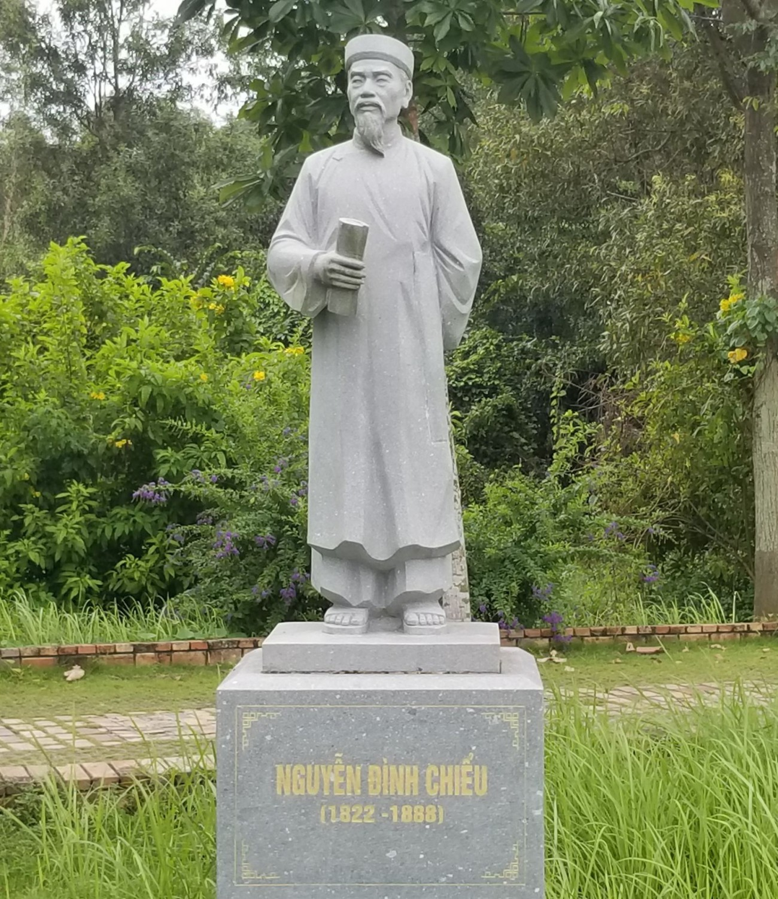
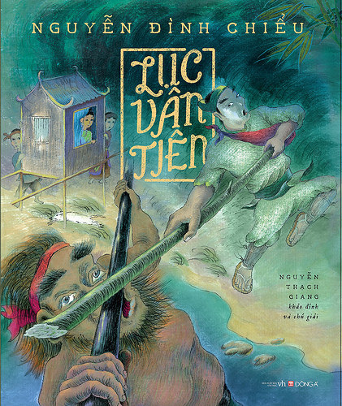
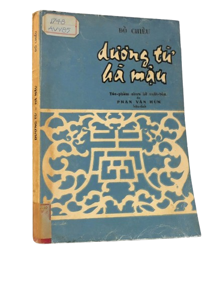
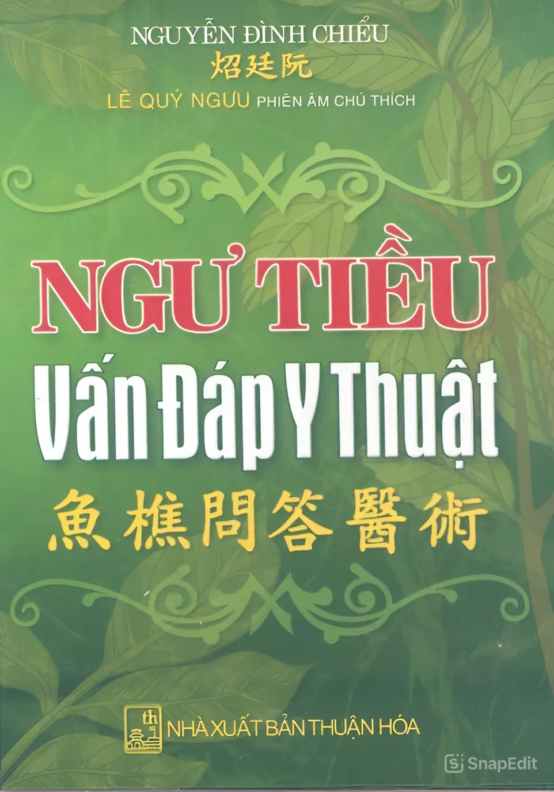

Video Về Nguyễn Đình Chiểu
Nguyễn Đình Chiểu (chữ Hán: 阮廷炤; 1822 - 1888), là một nhà thơ, thầy thuốc, và là một trong những nhân vật nổi bật của nền văn học Việt Nam thế kỷ 19. Tên tuổi của ông gắn liền với những tác phẩm lớn như "Lục Vân Tiên", "Dương Từ - Hà Mậu", và những bài thơ chiến đấu chống ngoại xâm, đặc biệt là trong cuộc kháng chiến chống Pháp.
Với những đóng góp lớn lao trong văn học và lịch sử, ông được UNESCO công nhận là Danh Nhân Văn Hoá Thế Giới vào năm 2021. Năm 1932, khu lăng mộ của ông đã được nhà nước công nhận là Khu di tích lịch sử văn hoá cấp Quốc gia. Đến năm 2000, khu di tích này tiếp tục được Bộ Văn hoá - Thể thao và Du lịch cấp bằng công nhận Khu di tích văn hoá, lịch sử cấp Quốc gia đặc biệt.
Dạy học, làm thuốc và sáng tác văn học
Năm 1848, mẹ Nguyễn Đình Chiểu qua đời, ông phải bỏ kỳ thi để về chịu tang. Sau đó, trên đường về, ông bị ốm nặng và mất đi thị giác. Trong thời gian này, ông đã học nghề thuốc và bắt đầu mở trường dạy học ở Gia Định vào năm 1851. Đây cũng là thời gian ông bắt đầu sáng tác những tác phẩm văn học nổi tiếng, trong đó có "Lục Vân Tiên". Sự nghiệp của ông gắn liền với hai công việc chính: làm thầy thuốc và làm thơ. Dù mù lòa, ông vẫn kiên trì dạy học và chữa bệnh cho người dân, trong khi vẫn sáng tác nhiều tác phẩm lớn mang đậm tinh thần yêu nước. Nguyễn Đình Chiểu là một trong những người khơi dậy ngọn lửa đấu tranh chống Pháp qua các bài thơ, đặc biệt là sau khi quân Pháp xâm lược Việt Nam vào năm 1858. Tác phẩm của ông, đặc biệt là "Lục Vân Tiên", đã trở thành những biểu tượng văn hóa không chỉ ở Nam Bộ mà còn trên cả nước.Tham gia chống Pháp
Khi quân Pháp xâm lược miền Nam, Nguyễn Đình Chiểu đã sử dụng ngòi bút của mình để tham gia vào cuộc kháng chiến. Năm 1859, sau khi quân Pháp chiếm Gia Định, ông đã viết bài thơ "Chạy giặc" để bày tỏ nỗi căm phẫn và sự đau đớn khi đất nước bị xâm lăng. Ông tiếp tục cống hiến cho cuộc kháng chiến qua nhiều bài thơ, trong đó có "Văn tế nghĩa sĩ Cần Giuộc", để tưởng nhớ những nghĩa sĩ đã hy sinh trong cuộc kháng chiến. Dù mù lòa, ông không ngừng dạy học và tham gia vào các hoạt động yêu nước, đồng thời sáng tác những tác phẩm phản ánh tinh thần bất khuất của dân tộc.Những tác phẩm lớn
-

- Lục Vân Tiên (1851): Đây là tác phẩm nổi bật nhất của Nguyễn Đình Chiểu, với 2.082 câu thơ lục bát. Truyện ca ngợi chính nghĩa, đạo đức và lòng yêu nước. Tác phẩm này không chỉ là một trong những kiệt tác của văn học dân tộc, mà còn trở thành một phần không thể thiếu trong văn hóa dân gian Nam Bộ. 
- Dương Từ – Hà Mậu (1854): Truyện thơ này phản ánh thái độ của Nguyễn Đình Chiểu đối với đạo Phật và Công giáo, hai tôn giáo mà ông không tán thành. 
- Ngư Tiều vấn đáp nho y diễn ca (1867): Tác phẩm này không chỉ là một cuốn sách về y học mà còn mang đậm tư tưởng yêu nước. Nó được viết dưới hình thức truyện thơ Nôm, truyền đạt kiến thức về thuốc và y thuật, đồng thời cũng phản ánh tinh thần đấu tranh của tác giả.